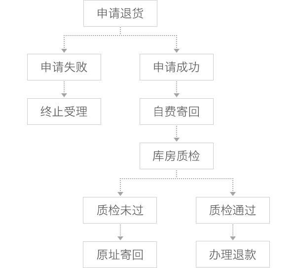

一、退货政策
适用品类：服装、箱包、鞋靴、配饰
退货政策内容：尚品网海外购为顾客提供签收后7天内的无忧退货服务，如果您在尚品网海外购购买的商品需要办理退货，请在商品收到7天内致电尚品网客服中心（4006-900-900），尚品网客服中心将会及时确认您需要退货的商品，并尽快为您办理退货手续。
如果发生下列情况之一，尚品网将无法为您办理退货：
1. 申请退货的商品不是尚品网海外购出售的商品；
2. 附扣在商品上的尚品网防伪吊牌或安全封条已经被拆除的商品；
3. 商品已经被使用、穿着、洗涤或被损坏；
4. 商品的标签和相关附属配件（如防尘袋、包装盒，身份卡证等）已经丢失或拆卸，任何标贴和相关附属配件的拆卸我们将无法为您办理退货；
5. 鞋履、首饰和手表等类商品的原有包装盒已经遗失或损坏的；
6. 商品为定制类商品、或者贴身类商品；
7. 因非正常使用及保管不当导致出现质量问题或损坏的商品；
8. 在尚品网海外购商品终端详情页说明中，另有说明无法办理退换货的商品；
9. 内衣、泳衣、耳饰等贴近皮肤的商品。
二、退货流程
海外配送退货流程图

退货流程说明：
1. 如果您的尚品网海外购商品需要办理退货，您需要在自商品签收之日起的7天之内向尚品网客服人员提出申请；
2. 申请退货的商品必须保证品附带原有的吊牌、附件和包装袋（盒）等完好未经拆除；
3. 退货申请成功后，您只需将商品附带原有的吊牌、附件和包装袋（盒）等二次包装好，寄回尚品网海外购的退货说明中的尚品网国内收件地址后，等待质检；
4. 商品质检通过后，尚品网客服人员会尽快帮您办理退款手续；
5. 如商品质检未通过，尚品网将按照您订单地址原路到付寄回商品，请您注意查收。
三、退货地址及运费
- 退货地址：
上海市杨浦区军工路1300号赛特工业园3号楼，尚品网
- 邮 编：
200433
- 收 件 人 ：
海外购退货组（收）
- 联系电话：
4006-900-900
温馨提示：
1. 如果您在尚品网海外购的商品退货申请经客服人员确认，请您选择快递并自付邮费（该邮费仅包含商品退回国内段的运输费用，国际段的运输费用由尚品网承担）寄回到上述地址，目前尚品网海外购暂时不受理平邮包裹或快递到付费的收件方式，希望您能谅解！
2. 退货商品寄回时，请确保商品的相关配件、单据、吊牌、包装、卡证等须完好齐全，并一并寄回。为了防止快递途中对商品造成损坏而影响您的退货，如商品有易破损、易划零件，请您在包裹中放入足够填充物。
四、退款说明
1. 您寄回的商品通过尚品网退货质检合格后，我们将立即为您办理退款手续，退款将在尚品网完成退款之后的3至15天原路返回到您当时支付的账户。
2. 退单金额仅包含您当时支付的商品金额，非质量问题产生的退换货，您已经支付的邮费及税费将无法返还。